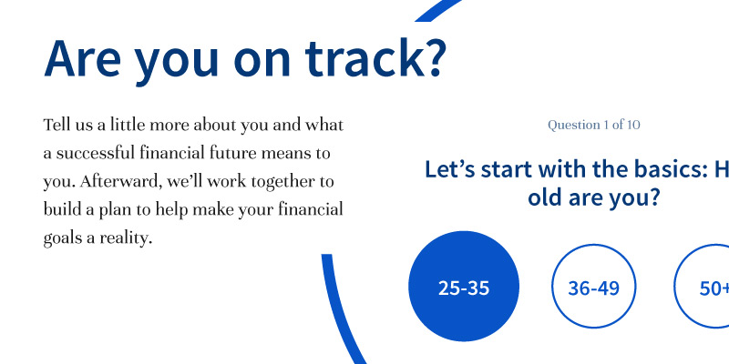

Majors & Mondragon
Website design for a nationwide wealth management firm.
Brief:
Create a bold, vibrant website concept that leans more toward fintech and away from big box firm.
Role:
Designer
Agency:
Visionary Services

See the Pen
NOMEym
by Ryan Young (
@rcyou
) on
CodePen
.
keyboard_backspace
Back to Work